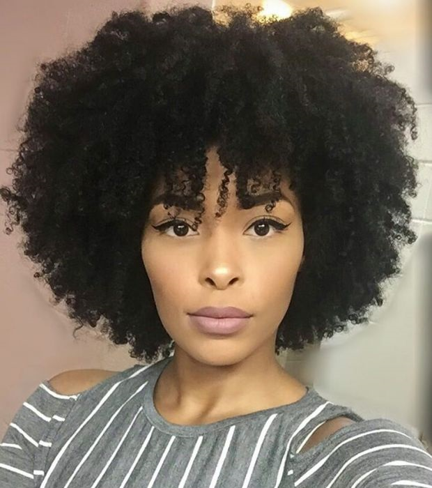

Cachos 4a - Crespo
Me desculpem, mas o cabelo tipo 4 é lindo demaiiiis!! Um cabelo cheio de peculiaridades, que passamos por muitas dificuldades na transição para saber como lidar com o volume ao tipo de cabelo mais crespo, mas que no final vira uma bela de uma coroa, para as rainhas que somos. Baseada, nessa paixão enlouquecida que tenho por esse tipo de cacho, resolvi bater um papo com vocês sobre cuidados e o que seria um cacho tipo 4A. Vamos lá!
Como ele é?
Possui uma estrutura um pouco mais aberta dentre os tipos 4, podemos dizer que chegam até a formar certos cachos só que bem enrolados como uma mola encolhida.
O cabelo 4A faz parte da família dos crespos e é caracterizado pela presença de cachinhos pequenos, um pouco menores que os cachos do tipo 3C. O cabelo do tipo 4A é bem macio e super versátil! Quando está curto, dá pra fazer um black power poderoso usando pente garfo, quando está longo, pode ser valorizado utilizando um bom corte em camadas.